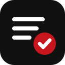
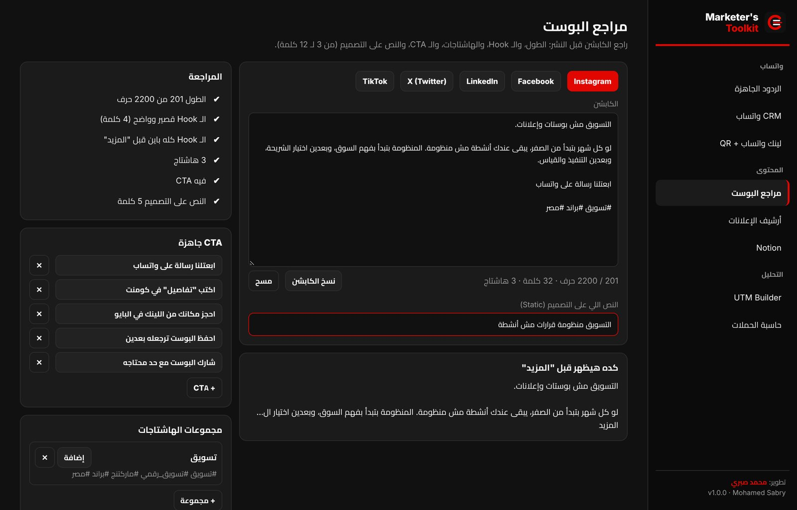

الأدوات / محتوى

PostCheck
راجع الكابشن قبل ما تنشر
بيراجع الكابشن على حدود كل منصة: الطول، والـ Hook، والهاشتاجات المتكررة أو الزيادة، ووجود CTA، والنص على التصميم (من 3 لـ 12 كلمة). وبيوريك البوست هيظهر إزاي قبل "المزيد".
Instagram, Facebook, LinkedIn, X, TikTok
معاينة قبل "المزيد"
مكتبة CTA وهاشتاجات
بيحفظ المسودة لوحده
شكلها · Preview
كده بتشتغل.

جرّبها هنا · Live demo
دي الأداة نفسها.شغّالة على الموقع.
بياناتك بتتحفظ في المتصفح بتاعك بس. ولو عجبتك، نزّلها كإضافة عشان تبقى قدامك على طول.
الصلاحيات · Permissions
بتطلب إيه وليه.ولا صلاحية زيادة عن اللزوم.
storageبتحفظ إعداداتك وبياناتك على جهازك إنت بسأدوات تانية